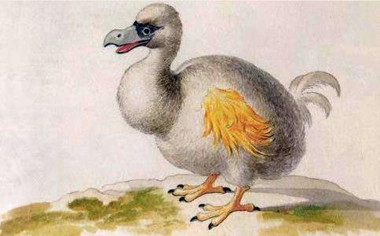
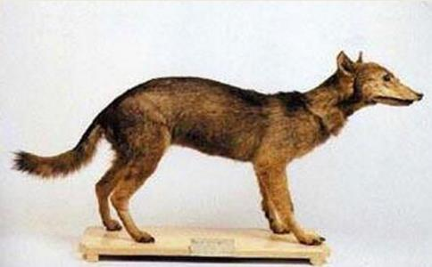
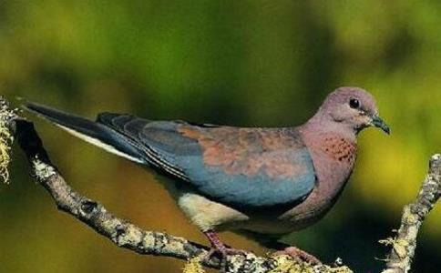
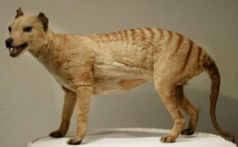

仅20世纪以来，就有数以百计的动物从地球上永远地消失了！它们曾经无忧无虑地
有一天，它们中自命为智慧的一族制造出了武器，杀戮开始了，灭绝开始了……今天的捕杀已不再是为了生存，更不知何时能够停止，直到地球上只剩下他们自己的时候，不知他们的枪口还能对准谁？自然界的惩罚，人类可以抵御吗？
建立这样一座纪念碑吧，要让我们记住在地球上还曾经有这样一些美丽的生命存在过。更要记得当今世界上还有许多美丽的生命如不加保护迟早也会变得和它们一样，只有到书本上才能看得到它们的模样。不知道这名单上下一个是什么，华南虎还是白鳍豚、冠麻鸭……希望这个碑文上的名单就到此为止！
渡渡鸟1680年灭。
渡渡鸟是一种重达23公斤的不会飞的鸟，生活于印度洋上的留尼汪岛。公元16世纪，水手们来到留尼汪岛。在150年里，所有的渡渡鸟都消失了。它们被屠杀以提供人们所需的油料，并作为猪、狗的食物。
日本狼1970年灭绝。
日本狼曾经是生活在北半球全域的狼中的一种。它肩高三十五公分，体长一米，是世界上体型最小、最为稀有的一种狼。它们曾经居住在本州、四国、九州的山林中。1905年，在日本奈良县的吉野郡鹫家口，人们捕获了一只狼，这只狼被确认为最后一只日本狼。
旅行鸽1914年灭绝。
从表面上看，它和普通的鸽子非常相似，不过它的后背是灰色的，似乎还有些发蓝，而胸前的颜色又是鲜红色的。所以，它看上去是那么的绚丽多姿。它和一般的鸽子不一样，叫声高昂响亮。它的另外一个特点是数量繁多，是地球上数目最多的鸟类。旅行鸽肉味鲜美，它的
最后一只野生的旅行鸽被击落是在1900年。到了20世纪30年代，只有一只被称做“玛莎”的旅鸽生活于辛辛那提的一个动物园中。玛莎死后，旅鸽也就永远消失。
袋狼（塔斯曼尼亚虎）1933(1936)年灭绝
这是一种难以形容的奇妙的动物，从它的头和牙来看，它是一只狼，然而它的身体又像老虎一样有着黑色的条纹，它可以像鬣狗样用四条腿奔跑，也可以像小袋鼠那样用后腿跳跃行走，它和袋鼠一样是有袋动物。因为它的特征，被人们叫做塔斯马尼亚狼、斑马狼、塔斯马尼亚虎。它的灭绝是由于捕杀，最后一只袋狼死于1933年。
巴巴里狮子：它身体全长3米左右，比现在生活在地球上的狮子要长四十公分左右。它体重230公斤，曾经是地球上体型最大的狮子。欧洲和阿拉伯的国王或皇帝们都把狮子比喻成权威的象征。巴巴里狮的最后阵地是摩洛哥的阿特拉斯山脉。1922年，最后一只巴巴里狮是被人类的猎枪击倒的。
北美海豹：北美海豹的身体长达两米以上，体重160公斤。它性情温和，动作缓慢，即使见了人，也不会掉头就逃。人类疯狂的猎杀使北美海豹越来越少，最后一只海豹出现是在1952年。
波利尼西亚蜗牛：波利尼西亚蜗牛是一种小型的蜗牛，身长10厘米至20厘米，种类繁多。它们的栖息地是南太平洋的小岛上。它的灭绝却是一个意外：人们为了抑制非洲蜗牛的过分繁殖，引进了它的天敌肉食蜗牛，没有一丝防范
巴切尔热带草原斑马：被人们称为是热带草原斑马亚种中最美丽的一种斑马，也正是这种美丽的外表使它们遭到了不幸。最后一只巴切尔热带草原斑马于1910年在伦敦的动物园中死去了。
多索森林驯鹿：这种小巧玲珑的驯鹿之所以灭绝，是源于人类的好奇心。多索森林驯鹿外型很小，它肩高80公分，身长不到一米四十，体重100至130公斤，是其他种类驯鹿的一半以下。它的模样与一般驯鹿一样，脖子下长有鬃毛，四蹄很大。数量很少，繁殖的数量始终不曾增长。1908年11月1日，最后的四只驯鹿被射杀了三只，只剩下一只小鹿，孤单地生活着。
瓜达鲁贝美洲大鹰：鹰的同类，又有些像隼。它的外型要比鹰大得多，就是这一点引发了悲剧。它生活在墨西哥领土，加里佛尼亚半岛的边际，瓜达鲁贝岛。美洲大鹰保留了祖先巨大的身材，因为没有天敌，它们几乎没有进化。1700年代，牧羊人以为它会像鹫那样袭击山羊，想尽办法对付美洲大鹰，最后11只大鹰被击落了9只，两只逃走，不知所踪。从此，再没有人看见过美洲大鹰。
卡罗拉依那鹦哥：卡罗拉依那鹦哥是北美唯一的鹦哥，和现在的鹦哥一样，喜爱玩耍，活波、快活，还很会说话。它们有着橙红色或黄色的头部，还有长长的尾和绿色的翅膀。它们在大树的洞中建巢，成群地生活在美国东部的落叶树林地带。树木的果实是它们的食物。但欧洲移民的到来改变了一切：森林被开垦，它们开始采食果物和农作物，于是成为人们的大敌。生存环境被破坏，加上人类大量的捕杀，卡罗拉依那鹦哥越来越少。1904年，最后一只野生鹦哥被人们击落了。
无齿海牛：1767年灭绝。
爪哇虎：1988年灭绝。
里海虎：1950年灭绝。
中国白臀叶猴：1882年灭绝。
拟斑马（斑驴）：1875（1883）年灭绝。
长毛蜘蛛猴：20世纪20年代灭绝。
白足澳洲林鼠：十九世纪初灭绝。
阿特拉斯棕熊：于1870年灭绝。
澳洲小兔猼：1890年灭绝。
昆士兰毛鼻袋熊：1900年灭绝。
澳米氏弹鼠：1901年灭绝。
南加州猫狐：1903年灭绝。
亚洲狮：1908年灭绝。
刚果北部白犀牛：1920年灭绝。
新疆虎：1916年灭绝。
大海雀：大西洋，1844年灭绝。
红鸭：印度，1942年灭绝，这是一种因美丽而灭绝的动物。
相关资料：据世界《红皮书》统计，20世纪有110个种和亚种的哺乳动物以及139种和亚种的鸟类在地球上消失了。目前，世界上已有593种鸟、400多种兽、209种两栖爬行动物和20000多种高等植物濒于灭绝。
物种灭绝是一种自然现象。根据达尔文的理论，通过那些成功跨越了几个地质周期而生存下来的物种，我们可以知道，物种的发展和消失是由于自然选择的过程超越了其背景生存比率。在化石记录的基础上，人们推算出哺乳动物和鸟类灭绝的历
根据世界自然资源协会的
每20分钟就会有一种动物或者植物从地球上消失。许多生物学家认为在30年间地球上现今生存的五分之一的物种都将会消失。按照现在的趋势，5200种动物，其中包括八分之一的鸟类都面临灭绝。另一部分令人关注的就是开花植物和依赖淡水生态系统生存的动物，包括蚌类、小龙虾、鱼类和两栖类动物。
按照现在物种灭绝的速度，在200到300年间有一半的鸟类和哺乳动物将会消失。八种植物种最少就有一种面临灭绝的危险。在未来的30年里，几乎四分之一的哺乳动物会面临灭绝的危险。在30年间最有可能消失的包括人们所广泛关注的黑犀牛和西伯利亚虎，还包括人们不太熟知的菲律宾鹰和东北豹。
根据2003年国际自然与自然资源保护联合会（IUCN）的红色目录，中国有422个物种面临灭绝的威胁。这其中包括81种哺乳动物、75种鸟类、46种鱼类、31种爬行动物和184种植物。
根据国际自然与自然资源保护联合会（IUCN）提供的信息，最濒临灭绝的物种包括扬子鳄、小笠原食果蝙蝠、巴西犁头鳐、菲律宾鹰、斑嘴犀鸟和长江鲟鱼。
对红色目录的分析发现越来越多的鸟类和哺乳类动物被列入严重濒危和濒危的目录中，进一步走向了濒危的边缘。在动物物种方面，在中国已经有3个物种灭绝，一种在野外消失。目前，仍然有29个物种被列为严重濒危，69个物种被列为濒危，140个物种被列为弱势。在植物物种方面，中国已经记录了2个物种的灭绝和一个物种在野外的消失。目前有34种被列为严重濒危，49种列为濒危，101种列为弱势。